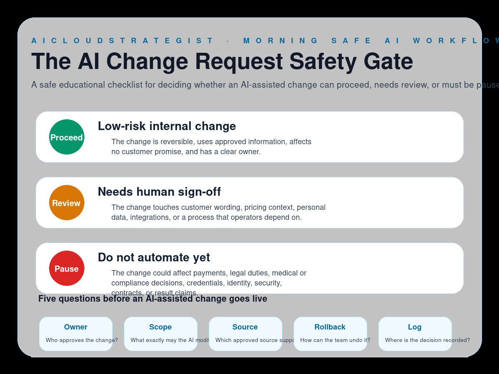

Morning publication · safe AI changes
The AI Change Request Safety Gate
A safe educational checklist for deciding whether an AI-assisted change can proceed, needs review, or must be paused before it affects customers or operations.

Three safety lanes
- Proceed — Low-risk internal change: The change is reversible, uses approved information, affects no customer promise, and has a clear owner.
- Review — Needs human sign-off: The change touches customer wording, pricing context, personal data, integrations, or a process that operators depend on.
- Pause — Do not automate yet: The change could affect payments, legal duties, medical or compliance decisions, credentials, identity, security, contracts, or result claims.
Five questions before go-live
- Owner: Who approves the change?
- Scope: What exactly may the AI modify?
- Source: Which approved source supports it?
- Rollback: How can the team undo it?
- Log: Where is the decision recorded?
How to use this gate
Use this gate before allowing an AI-assisted workflow to change copy, records, tasks, routing, or operating instructions. It keeps reversible internal edits separate from changes that need a named human reviewer.
Truth boundary
Educational workflow only — not legal, compliance, medical, financial, security, certification, savings, ranking, revenue, booking, or guaranteed-performance advice.
Need a safer AI/cloud operating review?
AICloudStrategist can help map owner controls, rollback points and practical proof-before-platform steps for serious business changes.
Request a free business review · contact@aicloudstrategist.com